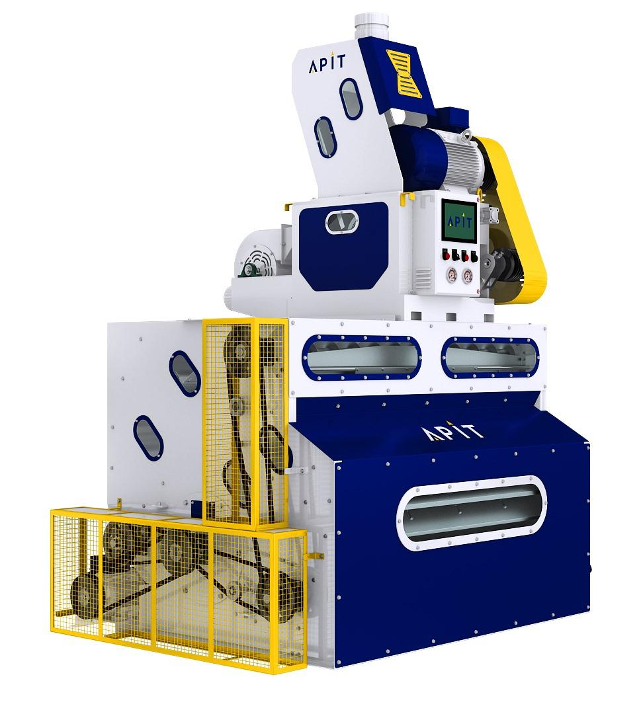
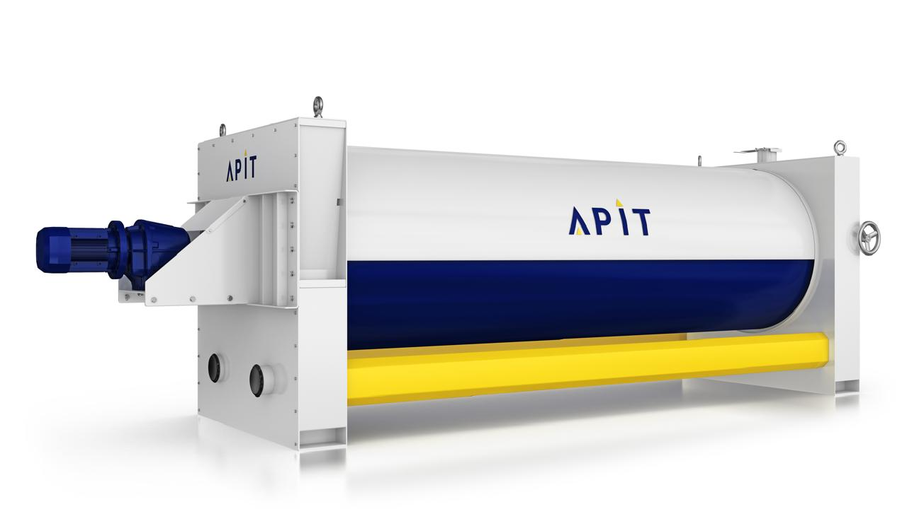
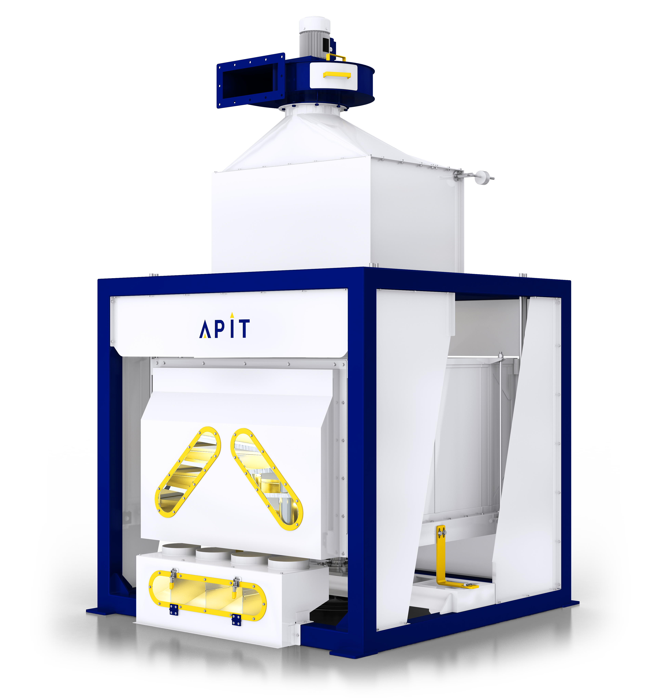
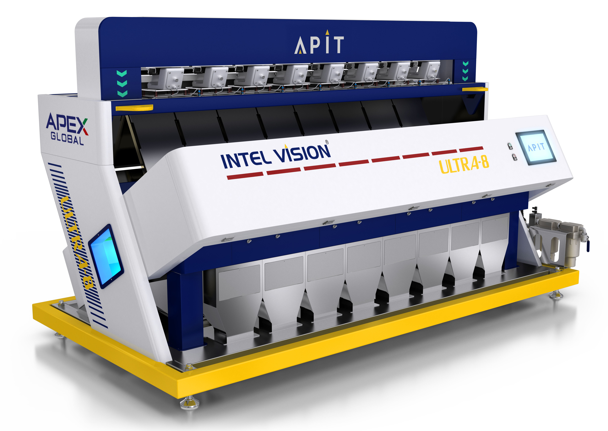

Procurement Analysis
Grade incoming paddy the moment it arrives — accepted, rejected and foreign-matter counts, variety and season tracked automatically.
Learn more →TMA is an end-to-end grain quality intelligence platform for rice mills. It grades paddy at procurement, watches quality on every machine through production, and verifies the finished milled rice — sample by sample, with a full trail of reports and analytics behind every decision.
Every grain has a story. Every decision has a value.

Every stage of rice milling changes grain quality. TMA is built around the three moments that matter most, plus the reporting layer that ties them together.
Grade incoming paddy the moment it arrives — accepted, rejected and foreign-matter counts, variety and season tracked automatically.
Learn more →Track head rice, brokens and rejections machine-by-machine and series-by-series, live, batch after batch.
Learn more →Verify the finished product — Basmati and Non-Basmati grading, grain dimensions and whiteness, before it ships.
Learn more →Filterable historical reports plus sample-to-sample trend charts, machine and series comparisons, and control charts.
Learn more →The same simple workflow at every stage of the mill — from a raw paddy sample to a finished-rice report.
An operator loads a sample and TMA images it — every grain photographed and isolated for analysis, guided by on-screen (and voice) instructions.
Each grain is classified — head rice, broken, chalky, discoloured, foreign matter — and rolled up into accepted / rejected / quality percentages per sample.
Results land in Reports & Analytics instantly — trend lines, best/worst samples, and machine or series comparisons ready to act on.
From the first cleaning stage to final polishing, TMA's Production Analysis sits alongside the machines already running your mill.









TMA uses advanced imaging and artificial intelligence to analyze large numbers of grains rapidly — turning what used to be a subjective, manual check into a fast, objective measurement.
Every grain is captured in fine detail, frame by frame, at a resolution no naked eye could match.
A calibrated imaging environment keeps every capture consistent — no shadows, no glare, no guesswork.
Trained vision models classify each grain in real time — head rice, broken, chalky, discoloured and more.
Every result is captured digitally the moment it's generated — searchable, comparable, and ready for analysis.
Every workflow step can be narrated aloud, so mill-floor operators can run a full analysis without needing to read English.
From the intake gate to the export container, TMA gives everyone who touches rice quality the same objective standard to work from.
Buy better paddy, run a tighter mill line, and ship consistent, verified quality every day.
Back every shipment with objective, sample-level grading your international buyers can trust.
Replace slow, subjective manual grading with fast, repeatable, instrument-based analysis.
Apply one consistent, auditable quality standard across procurement and inspection programmes.
Five ways sample-level quality data changes how a mill actually runs.
Grade paddy at the gate and make procurement decisions on measured quality, not a guess.
See quality machine-by-machine and catch process issues while they're still cheap to fix.
Verify every outgoing batch matches the grade and specification you promised.
One connected history of every sample — trends, comparisons and outliers, always at hand.
Fewer rejected loads, less avoidable breakage, and consistent quality that protects your price.
See how TMA fits into your procurement, production and milling workflow.